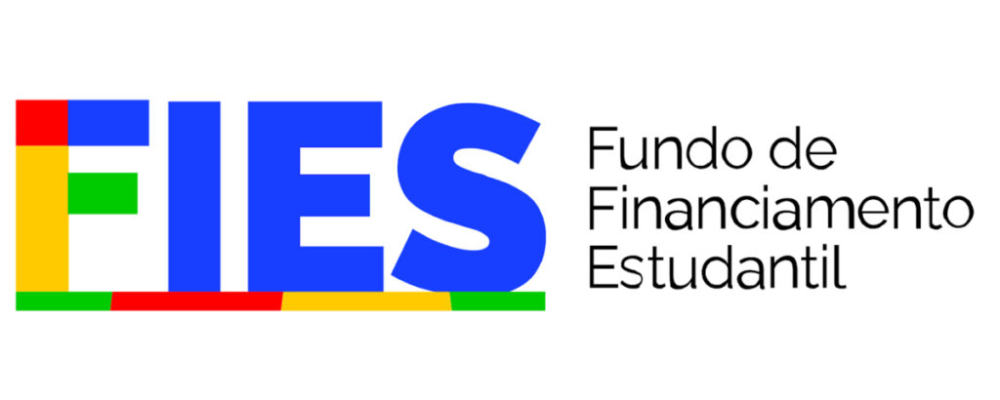

Fundo de Financiamento Estudantil (Fies)

O que é o Fies?
O Fundo de Financiamento Estudantil (Fies), criado pela Lei nº 10.260, de 12 de julho de 2001, é uma ação do Ministério da Educação que financia cursos superiores não gratuitos com avaliação positiva no Sistema Nacional de Avaliação da Educação Superior (Sinaes). Os financiamentos concedidos com recursos do Fies, para estudantes com renda familiar per capita de até 3 salários mínimos, terão taxa real zero de juros.
Durante o curso, o estudante financiado deve pagar mensalmente, o valor da coparticipação, que corresponde a parcela dos encargos educacionais não financiada, diretamente ao agente financeiro. Após a conclusão do curso, o estudante realizará a amortização do saldo devedor do financiamento de acordo com a sua realidade financeira, ou seja, a parcela da amortização será variável de acordo com a renda e nos casos de o estudante não ter renda, será devido apenas o pagamento mínimo.
Como Funciona?
- O estudante só começa a pagar após a conclusão do curso.
- As taxas de juros são reduzidas.
- Existem diferentes modalidades de financiamento, de acordo com a renda familiar.
Requisitos
- Ter participado do Enem a partir de 2010.
- Ter média mínima de 450 pontos nas provas e nota maior que zero na redação.
- Comprovar renda familiar de até 3 salários mínimos por pessoa.
COMO DEVEM SER EFETUADAS AS INSCRIÇÕES NO PROCESSO SELETIVO DO FIES?
Para se inscrever no processo seletivo do Fies, acesse o sistema de inscrição do Fies em https://acessounico.mec.gov.br, clique em "Minha Inscrição" e em seguida em "Fazer Cadastro". Você será direcionado para a página do GOV.BR, onde deverá efetuar seu cadastro preenchendo todas as informações solicitadas.
Após concluído o cadastro, você será direcionado novamente para a página do Fies. Clique sobre a opção "Entrar com GOV.BR", e informe o CPF e a senha cadastrada. Feito isso, já estará no sistema de inscrição do Fies, é só preencher as informações solicitadas pelo sistema.
Estratégias
Pesquise bem as condições de pagamento, faça simulações de parcelas e organize um planejamento financeiro antes de contratar o Fies.
Dúvidas Frequentes
O Fies cobre qualquer curso? Não, apenas cursos com avaliação positiva no MEC e que participem do programa.
Quem pode se inscrever no FIES?
Podem se inscrever estudantes que participaram do Enem a partir de 2010, com nota mínima de 450 pontos na média das provas e nota superior a zero na redação.
Quais cursos podem ser financiados?
Apenas cursos que tenham avaliação positiva no MEC e estejam disponíveis no sistema do FIES podem ser financiados.
Preciso ter renda mínima ou máxima para participar?
Sim. O FIES é destinado a candidatos com renda familiar mensal bruta de até 3 salários mínimos por pessoa.
Como funciona o pagamento durante o curso?
Durante o curso, o estudante paga apenas os encargos operacionais e o seguro obrigatório, conforme previsto em contrato.
Quando começo a pagar o financiamento?
O pagamento das parcelas do financiamento começa após a conclusão do curso, com um prazo de carência de até 18 meses.
Posso usar o FIES para mais de um curso?
Não. O estudante só pode ter um contrato ativo de FIES por vez.
É preciso ter fiador?
Dependendo da modalidade do FIES e da renda do estudante, pode ser exigido um fiador, salvo nas modalidades com garantia do Fundo Garantidor (FGD).
Como é feita a seleção dos candidatos?
A seleção é baseada na nota do Enem, na renda familiar e nas vagas disponíveis por curso, turno e instituição.
Como posso me inscrever?
As inscrições são feitas exclusivamente pela internet, no site oficial do FIES, durante os períodos de seleção divulgados pelo MEC.